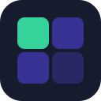
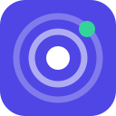

Shown at 16 / 32 / 64 / 128 px and in a light and a dark browser tab. Current favicon is the three bars without the dot.
Today's bars, plus a green dot meaning "something is running".
Brand letter on an indigo gradient. Simple, reads well small.
Dark tile grid, one lit tile = the active project.

16pxConcentric rings with a live dot. Monitoring feel.

16px